연잎 표면의 돌기 구조와 자가 세정 도료
연잎 표면에는 높이 10~20µm의 돌기가 촘촘히 나 있고, 그 위를 왁스 결정이 덮고 있습니다. 물방울은 이 표면에 160° 넘는 접촉각으로 맺혀 굴러떨어지면서 먼지를 함께 쓸어 갑니다. 이 구조를 옮긴 외벽 도료는 1999년에 처음 상용화되었습니다.
연잎 표면에는 높이 10~20µm의 돌기가 촘촘히 나 있고, 그 위를 왁스 결정이 덮고 있습니다. 물방울은 이 표면에 160° 넘는 접촉각으로 맺혀 굴러떨어지면서 먼지를 함께 쓸어 갑니다. 이 구조를 옮긴 외벽 도료는 1999년에 처음 상용화되었습니다.
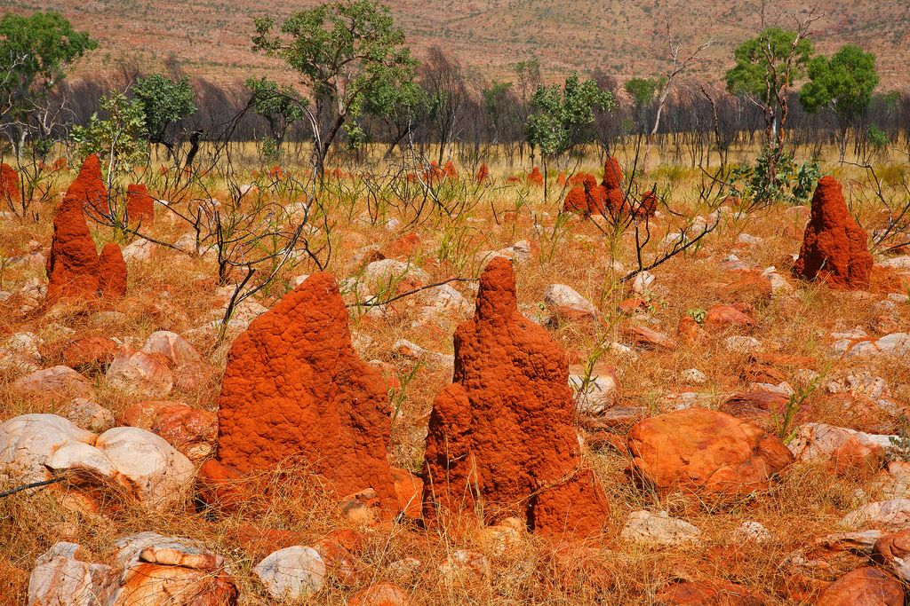
아프리카 흰개미 둔덕 안쪽은 바깥 기온이 3~42℃로 바뀌는 동안 31℃ 안팎을 유지합니다. 짐바브웨 하라레의 이스트게이트 센터는 둔덕의 굴뚝형 환기 방식을 옮겨, 같은 규모 건물이 쓰는 냉방 에너지의 약 10%로 운영됩니다.
Follow our instagram Magazine @phyllo_lab
Page #1 of 1 pages (20 items per page)
연잎 표면에는 높이 10~20µm의 돌기가 촘촘히 나 있고, 그 위를 왁스 결정이 덮고 있습니다. 물방울은 이 표면에 160° 넘는 접촉각으로 맺혀 굴러떨어지면서 먼지를 함께 쓸어 갑니다. 이 구조를 옮긴 외벽 도료는 1999년에 처음 상용화되었습니다.
Last updated on 2026-08-21 by PHYLLO Rangers
아프리카 흰개미 둔덕 안쪽은 바깥 기온이 3~42℃로 바뀌는 동안 31℃ 안팎을 유지합니다. 짐바브웨 하라레의 이스트게이트 센터는 둔덕의 굴뚝형 환기 방식을 옮겨, 같은 규모 건물이 쓰는 냉방 에너지의 약 10%로 운영됩니다.
Last updated on 2026-08-07 by PHYLLO Rangers
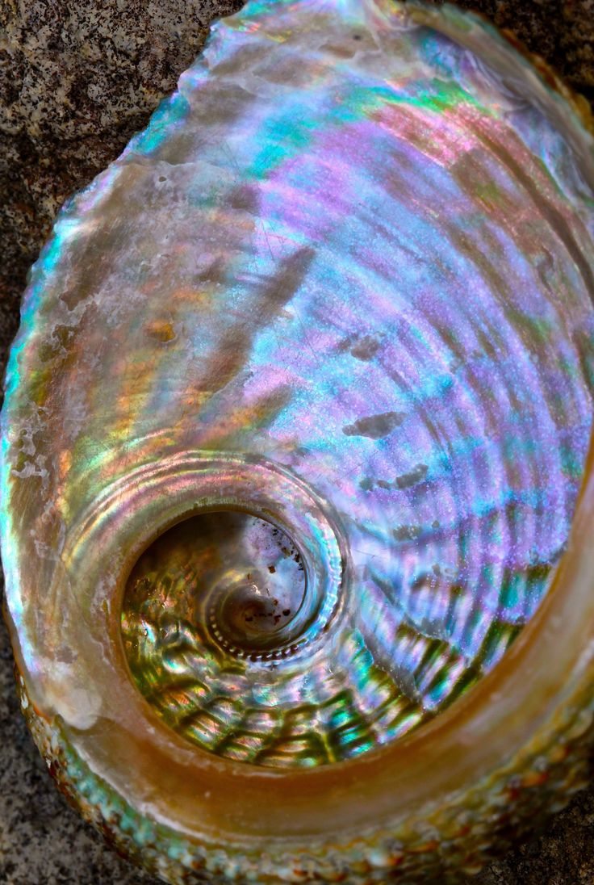
전복 껍데기 안쪽의 진주층은 두께 약 0.5µm의 아라고나이트 판과 얇은 단백질 층이 벽돌과 모르타르처럼 쌓인 구조입니다. 성분 대부분이 깨지기 쉬운 광물인데도 파괴 인성은 같은 광물 결정의 약 3,000배입니다.
Last updated on 2026-07-24 by PHYLLO Rangers
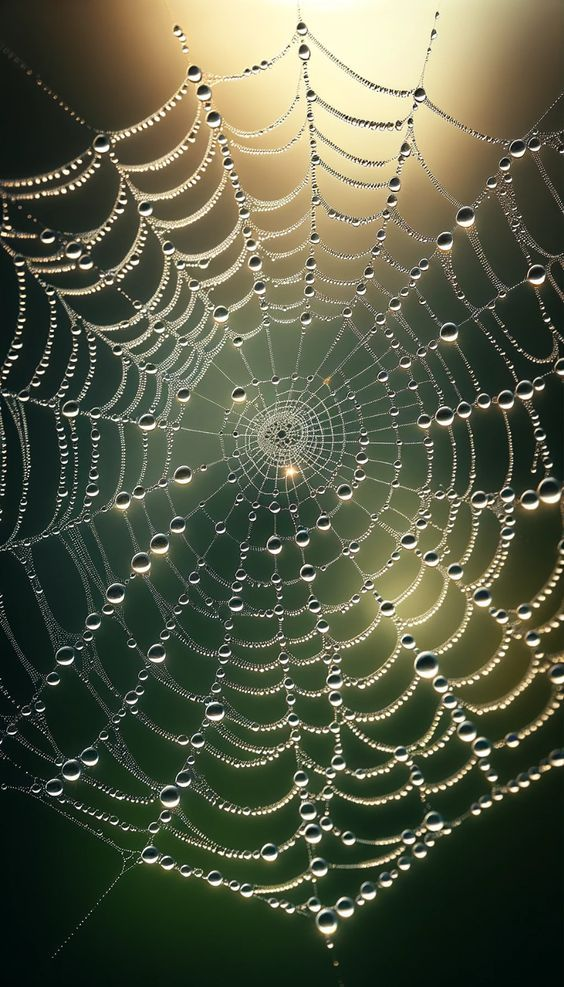
호랑거미류 일부는 거미줄에 자외선을 반사하는 띠를 짜 넣습니다. 새는 자외선을 볼 수 있어 이 띠를 보고 거미줄을 피합니다. 사람 눈에는 투명하고 새 눈에는 보이는 무늬를 넣은 건축용 유리가 2006년에 나왔습니다.
Last updated on 2026-07-10 by PHYLLO Rangers
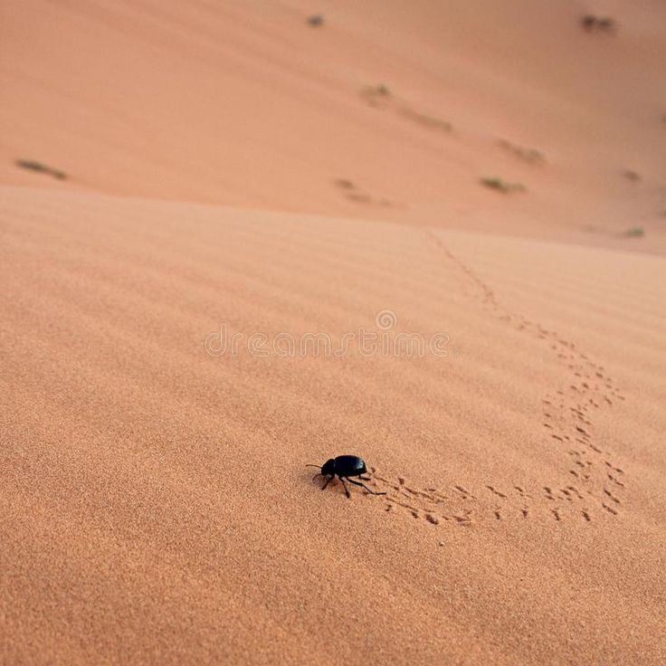
나미브사막의 딱정벌레는 새벽 안개를 등으로 받아 물을 모읍니다. 등껍질의 친수성 돌기에 물방울이 맺히고, 커진 물방울은 발수성 홈을 따라 입으로 흘러갑니다. 같은 원리를 쓴 안개 수집 그물은 1㎡당 하루 수 리터의 물을 모읍니다.
Last updated on 2026-06-26 by PHYLLO Rangers
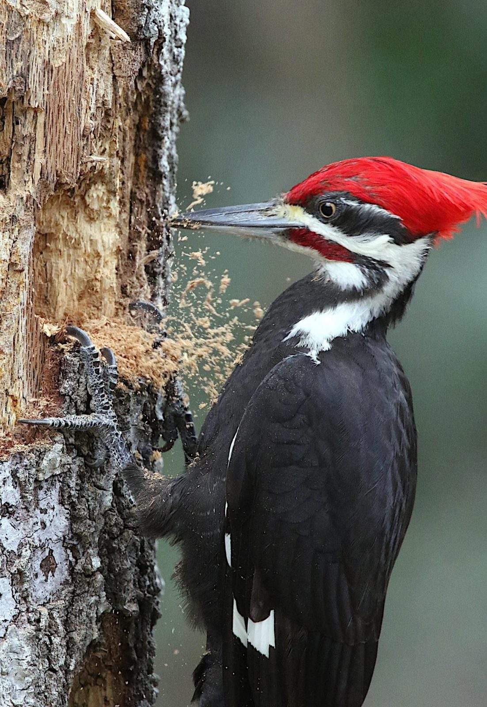
딱따구리는 나무를 초당 20회 넘게 쪼며, 이때 머리에는 중력의 1,000배가 넘는 감속이 걸립니다. 부리, 설골, 해면골이 충격을 나누어 받습니다. 이 구조를 본뜬 충격 흡수 장치가 비행 기록 장치 보호용으로 연구되었습니다.
Last updated on 2026-06-12 by PHYLLO Rangers
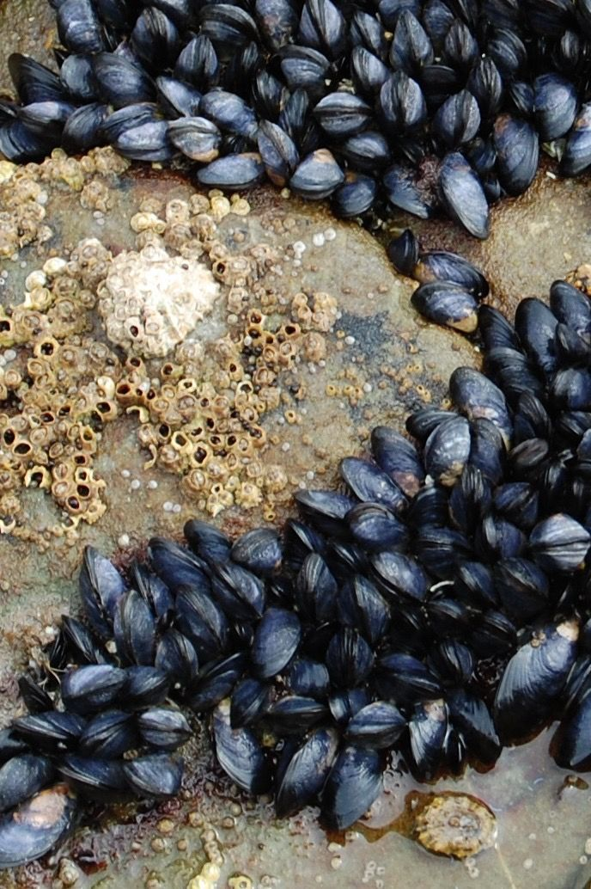
홍합은 파도가 치는 바위에 족사라는 가는 실로 몸을 붙입니다. 족사 끝의 단백질에는 도파(DOPA)라는 아미노산이 많아 젖은 표면에도 붙습니다. 이 성분을 본뜬 접착제가 수술용 봉합 대체재로 연구되고 있습니다.
Last updated on 2026-05-29 by PHYLLO Rangers
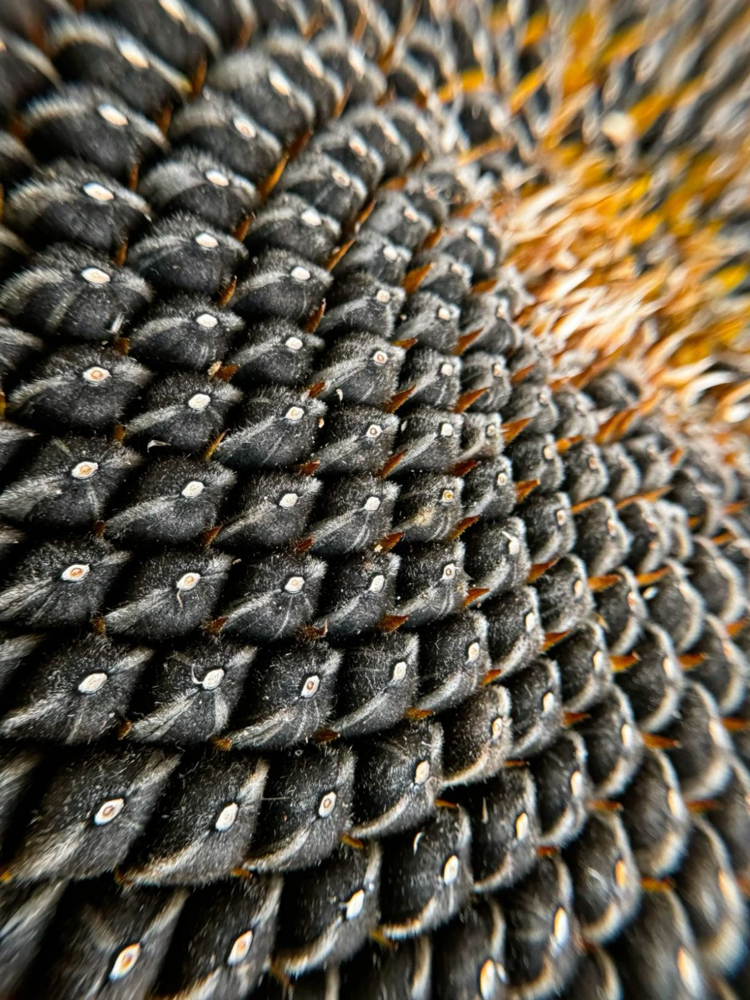
해바라기 씨는 이웃한 씨가 137.5°씩 돌아가며 놓이는 나선 배열을 따릅니다. 2012년 연구진은 스페인의 태양열 발전소 거울 배치를 이 배열로 바꾸어 계산했습니다. 필요한 땅은 15.8% 줄고, 거울이 서로 가리는 손실도 줄었습니다.
Last updated on 2026-05-15 by PHYLLO Rangers
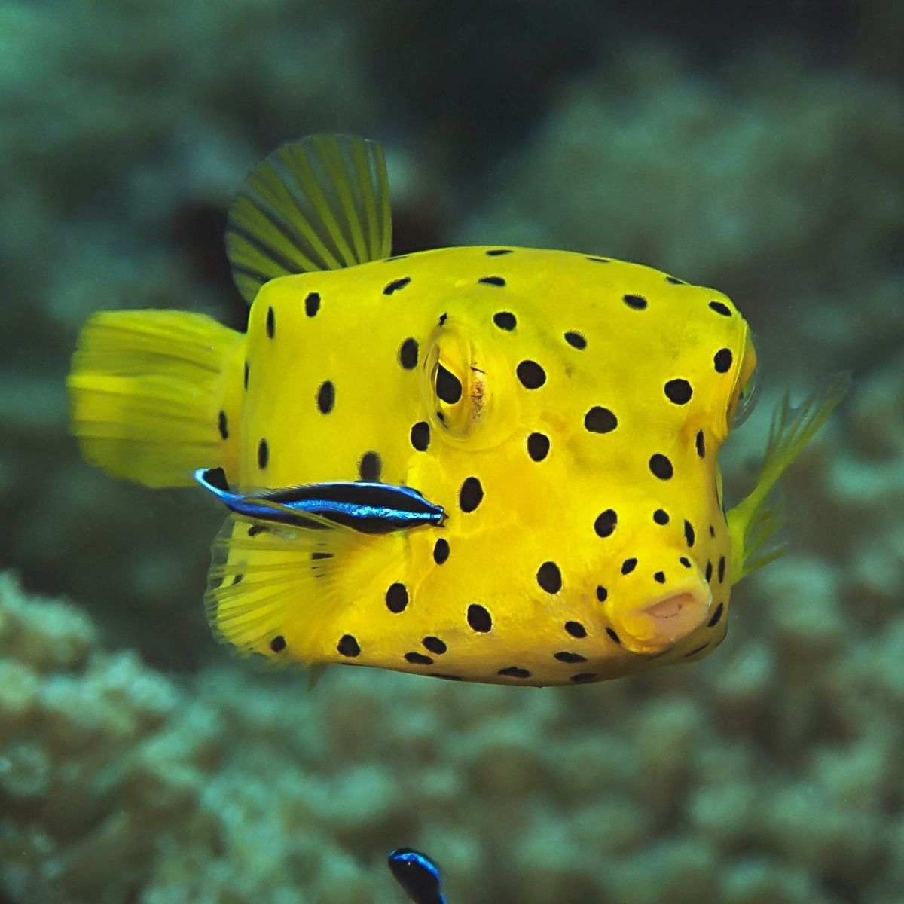
거북복은 뼈판으로 된 상자 모양 몸통을 가졌지만 물속에서 안정적으로 헤엄칩니다. 2005년 한 자동차 회사가 이 형태를 본뜬 콘셉트카를 발표했고, 공기 저항 계수는 0.19였습니다.
Last updated on 2026-05-01 by PHYLLO Rangers
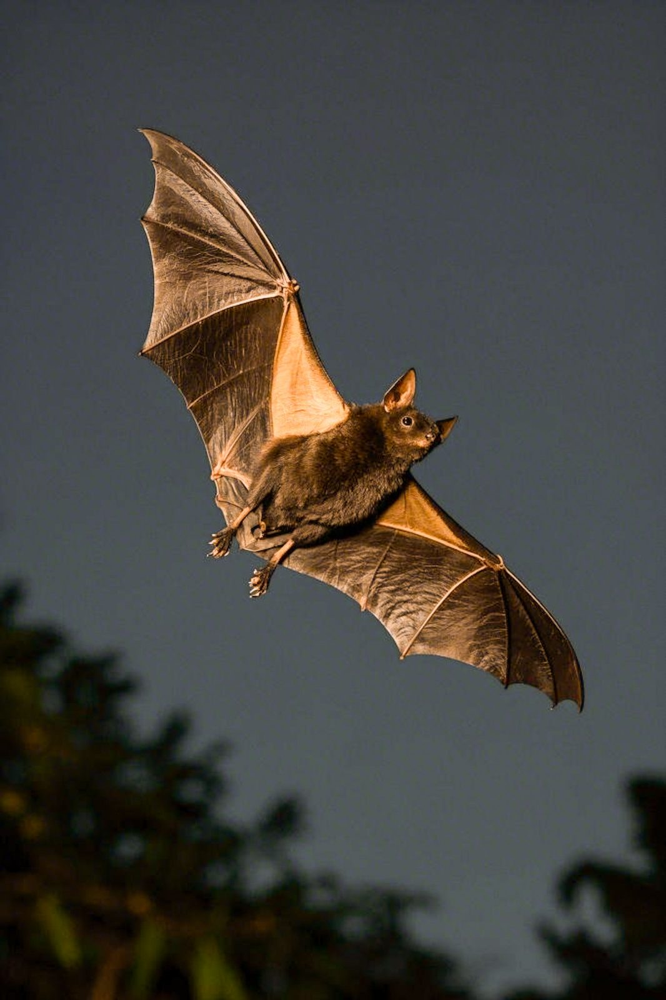
박쥐는 초음파를 내고 되돌아오는 소리로 주변을 파악합니다. 2004년 영국 리즈 대학 연구진은 이 방식을 흰 지팡이에 넣어, 앞쪽과 머리 높이의 장애물을 손잡이 진동으로 알려 주는 지팡이를 만들었습니다.
Last updated on 2026-04-17 by PHYLLO Rangers
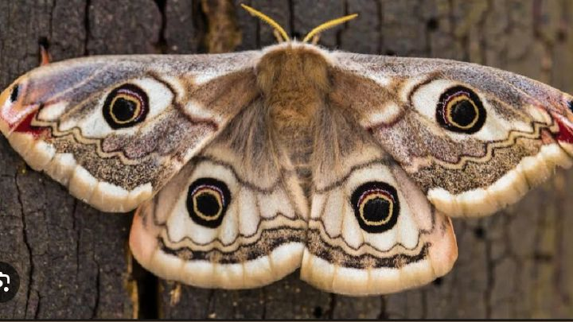
밤에 날아다니는 나방의 눈 표면에는 간격 약 200nm의 돌기가 빽빽하게 나 있습니다. 이 돌기가 빛의 반사를 줄여 포식자에게 눈이 잘 보이지 않게 합니다. 이를 본뜬 필름은 반사율을 1% 아래로 낮춥니다.
Last updated on 2026-04-03 by PHYLLO Rangers
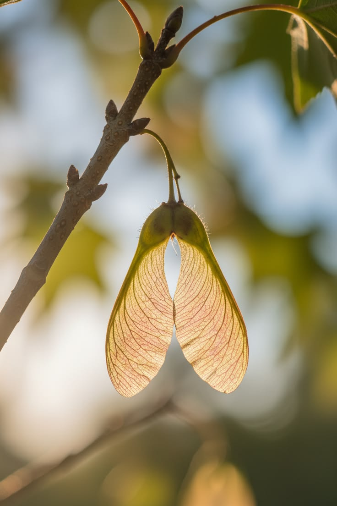
단풍나무 씨앗은 날개 한 쪽으로 회전하며 천천히 떨어집니다. 회전이 날개 앞쪽에 소용돌이를 만들어 양력을 높이기 때문입니다. 2021년 미국 노스웨스턴 대학 연구진은 이 원리로 크기 1mm의 비행 센서를 만들었습니다.
Last updated on 2026-03-20 by PHYLLO Rangers
phyllo_lab
Last updated on 2026-08-21 by PHYLLO Rangers
연잎 표면에는 높이 10~20µm의 돌기가 촘촘히 나 있고, 그 위를 왁스 결정이 덮고 있습니다. 물방울은 이 표면에 160° 넘는 접촉각으로 맺혀 굴러떨어지면서 먼지를 함께 쓸어 갑니다. 이 구조를 옮긴 외벽 도료는 1999년에 처음 상용화되었습니다.
독일 식물학자 빌헬름 바르틀로트는 1970년대부터 전자 현미경으로 식물 표면 약 1만 종을 관찰했습니다. 그는 연잎이 늘 깨끗한 이유가 표면의 이중 요철 구조에 있다는 것을 밝히고, 1997년 이를 연잎 효과라는 이름으로 발표했습니다.
연잎의 돌기는 10~15µm 간격으로 늘어서 있고, 돌기 표면에는 지름 약 1µm의 왁스 결정이 다시 덮여 있습니다. 물방울은 돌기 끝에만 닿기 때문에 표면과 닿는 면적이 2~3%에 그칩니다.
미세 요철을 만드는 입자와 발수 성분을 섞은 외벽 도료는 빗물만으로 오염을 씻어 냅니다. 이후 유리, 섬유, 태양광 패널 표면 코팅으로 적용 분야가 넓어졌습니다.
참고 문헌:
Barthlott, W., & Neinhuis, C. (1997). Purity of the sacred lotus, or escape from contamination in biological surfaces. Planta, 202, 1–8.
Last updated on 2026-08-07 by PHYLLO Rangers
아프리카 흰개미 둔덕 안쪽은 바깥 기온이 3~42℃로 바뀌는 동안 31℃ 안팎을 유지합니다. 짐바브웨 하라레의 이스트게이트 센터는 둔덕의 굴뚝형 환기 방식을 옮겨, 같은 규모 건물이 쓰는 냉방 에너지의 약 10%로 운영됩니다.
흰개미 둔덕에는 지하 둥지와 꼭대기를 잇는 굴뚝이 있고, 벽 전체에 작은 구멍이 퍼져 있습니다. 낮에는 데워진 공기가 굴뚝으로 올라가 빠지고, 밤에는 차가운 바깥 공기가 아래쪽 통로로 들어옵니다.
건축가 믹 피어스는 1996년 완공한 이스트게이트 센터에 이 순환을 적용했습니다. 밤에 들인 찬 공기로 두꺼운 콘크리트 바닥을 식히고, 낮에는 데워진 공기를 건물 중앙의 굴뚝 48개로 내보냅니다.
이 건물에는 일반 냉방 설비가 없습니다. 준공 후 첫 5년 동안 같은 도시 비슷한 규모 건물보다 에너지를 약 90% 적게 썼다고 보고되었습니다.
참고 문헌:
Turner, J. S., & Soar, R. C. (2008). Beyond biomimicry: What termites can tell us about realizing the living building. Proc. 1st Int. Conf. Industrialized, Intelligent Construction.
Last updated on 2026-07-24 by PHYLLO Rangers
전복 껍데기 안쪽의 진주층은 두께 약 0.5µm의 아라고나이트 판과 얇은 단백질 층이 벽돌과 모르타르처럼 쌓인 구조입니다. 성분 대부분이 깨지기 쉬운 광물인데도 파괴 인성은 같은 광물 결정의 약 3,000배입니다.
진주층의 95%는 탄산칼슘 결정인 아라고나이트이고, 나머지 5%가 단백질과 키틴입니다. 판 사이의 유기층은 두께가 20~30nm입니다.
균열이 생기면 판 사이를 지그재그로 돌아가면서 에너지를 잃습니다. 판이 서로 미끄러질 때 단백질 층이 늘어나 충격을 흡수합니다.
이 구조를 본뜬 세라믹 적층 복합재와 방탄 소재, 인공 뼈 연구가 진행되고 있습니다.
참고 문헌:
Jackson, A. P., Vincent, J. F. V., & Turner, R. M. (1988). The mechanical design of nacre. Proc. R. Soc. Lond. B, 234, 415–440.
Last updated on 2026-07-10 by PHYLLO Rangers
호랑거미류 일부는 거미줄에 자외선을 반사하는 띠를 짜 넣습니다. 새는 자외선을 볼 수 있어 이 띠를 보고 거미줄을 피합니다. 사람 눈에는 투명하고 새 눈에는 보이는 무늬를 넣은 건축용 유리가 2006년에 나왔습니다.
호랑거미류가 거미줄 가운데에 짜 넣는 흰 지그재그 띠를 흰 띠 장식(stabilimentum)이라고 부릅니다. 이 띠는 자외선을 강하게 반사합니다.
대부분의 새는 300~400nm 파장의 자외선을 봅니다. 사람의 눈은 이 파장을 거의 보지 못합니다.
자외선 반사 코팅으로 거미줄 모양 무늬를 넣은 유리는 사람에게는 일반 유리처럼 보입니다. 비행 터널 시험에서 새가 이 유리를 피하는 비율이 일반 유리보다 높게 나타났습니다.
참고 문헌:
Blackledge, T. A. (1998). Stabilimentum variation and foraging success in Argiope aurantia and Argiope trifasciata. Journal of Zoology, 246, 21–27.
Last updated on 2026-06-26 by PHYLLO Rangers
나미브사막의 딱정벌레는 새벽 안개를 등으로 받아 물을 모읍니다. 등껍질의 친수성 돌기에 물방울이 맺히고, 커진 물방울은 발수성 홈을 따라 입으로 흘러갑니다. 같은 원리를 쓴 안개 수집 그물은 1㎡당 하루 수 리터의 물을 모읍니다.
이 딱정벌레는 안개가 낀 아침에 모래 언덕 위에서 머리를 낮추고 등을 바람 쪽으로 세웁니다.
등의 돌기 끝은 물과 잘 붙고, 돌기 사이 표면은 왁스로 덮여 물을 밀어냅니다. 물방울은 돌기에서 자라다가 무게가 커지면 홈으로 굴러갑니다.
친수성과 발수성 영역을 번갈아 배치한 그물과 필름이 칠레, 모로코 등 안개가 잦은 건조 지역에서 시험되고 있습니다.
참고 문헌:
Parker, A. R., & Lawrence, C. R. (2001). Water capture by a desert beetle. Nature, 414, 33–34.
Last updated on 2026-06-12 by PHYLLO Rangers
딱따구리는 나무를 초당 20회 넘게 쪼며, 이때 머리에는 중력의 1,000배가 넘는 감속이 걸립니다. 부리, 설골, 해면골이 충격을 나누어 받습니다. 이 구조를 본뜬 충격 흡수 장치가 비행 기록 장치 보호용으로 연구되었습니다.
부리는 단단하면서도 약간 휘어지고, 혀를 받치는 설골은 두개골을 감싸 돌며 띠처럼 힘을 나눕니다. 두개골 안쪽의 해면골은 스펀지처럼 구멍이 많습니다.
2011년 미국 연구진은 이 층 구조를 금속과 유리 입자로 재현한 용기를 만들었습니다. 이 용기에 넣은 전자 장치는 약 60,000g의 충격을 견뎠습니다.
헬멧 내피, 운송 중 정밀 장비 보호재, 스포츠 보호 장구 설계에 같은 원리가 검토되고 있습니다.
참고 문헌:
Yoon, S.-H., & Park, S. (2011). A mechanical analysis of woodpecker drumming and its application to shock-absorbing systems. Bioinspiration & Biomimetics, 6, 016003.
Last updated on 2026-05-29 by PHYLLO Rangers
홍합은 파도가 치는 바위에 족사라는 가는 실로 몸을 붙입니다. 족사 끝의 단백질에는 도파(DOPA)라는 아미노산이 많아 젖은 표면에도 붙습니다. 이 성분을 본뜬 접착제가 수술용 봉합 대체재로 연구되고 있습니다.
홍합 한 마리는 50~100가닥의 족사를 만듭니다. 각 족사 끝에는 지름 약 2mm의 접착판이 있습니다.
도파는 물 분자를 밀어내고 금속, 유리, 플라스틱 표면과 결합합니다. 접착판 단백질 일부는 도파가 전체 아미노산의 30%에 이릅니다.
도파를 넣은 고분자 접착제는 출혈이 있는 조직에서도 붙습니다. 혈관, 태아막, 뼈 접합용 접착제로 동물 실험이 이루어졌습니다.
참고 문헌:
Lee, H., Dellatore, S. M., Miller, W. M., & Messersmith, P. B. (2007). Mussel-inspired surface chemistry for multifunctional coatings. Science, 318, 426–430.
Last updated on 2026-05-15 by PHYLLO Rangers
해바라기 씨는 이웃한 씨가 137.5°씩 돌아가며 놓이는 나선 배열을 따릅니다. 2012년 연구진은 스페인의 태양열 발전소 거울 배치를 이 배열로 바꾸어 계산했습니다. 필요한 땅은 15.8% 줄고, 거울이 서로 가리는 손실도 줄었습니다.
137.5°는 원을 황금비로 나눈 각도입니다. 이 각도로 씨를 놓으면 씨 사이 빈틈이 가장 적게 생깁니다.
연구진은 탑을 둘러싼 거울 624장의 위치를 해바라기 나선으로 다시 배치했습니다. 탑에서 가까운 거울일수록 간격을 좁혔습니다.
같은 발전량을 내는 데 필요한 부지가 15.8% 줄었고, 거울 사이 그림자 손실이 줄어 효율이 0.36%p 올랐습니다.
참고 문헌:
Noone, C. J., Torrilhon, M., & Mitsos, A. (2012). Heliostat field optimization: A new computationally efficient model and biomimetic layout. Solar Energy, 86, 792–803.
Last updated on 2026-05-01 by PHYLLO Rangers
거북복은 뼈판으로 된 상자 모양 몸통을 가졌지만 물속에서 안정적으로 헤엄칩니다. 2005년 한 자동차 회사가 이 형태를 본뜬 콘셉트카를 발표했고, 공기 저항 계수는 0.19였습니다.
거북복의 몸은 육각형 뼈판이 이어 붙은 단단한 껍데기로 덮여 있습니다. 지느러미와 꼬리만 움직입니다.
몸통 모서리에서 생기는 소용돌이가 몸이 기울 때 반대 방향으로 힘을 만들어 자세를 되돌린다는 설명이 있었습니다. 이후 연구에서는 이 효과가 생각보다 작다는 결과도 나왔습니다.
콘셉트카는 실내 공간을 넓게 유지하면서 저항 계수 0.19를 기록했습니다. 당시 일반 승용차는 0.3 안팎이었습니다.
참고 문헌:
Van Wassenbergh, S., et al. (2015). Boxfish swimming paradox resolved: forces by the flow of water around the body promote manoeuvrability. J. R. Soc. Interface, 12, 20141146.
Last updated on 2026-04-17 by PHYLLO Rangers
박쥐는 초음파를 내고 되돌아오는 소리로 주변을 파악합니다. 2004년 영국 리즈 대학 연구진은 이 방식을 흰 지팡이에 넣어, 앞쪽과 머리 높이의 장애물을 손잡이 진동으로 알려 주는 지팡이를 만들었습니다.
박쥐는 20~200kHz의 소리를 냅니다. 소리가 돌아오는 시간과 세기로 물체의 거리와 크기를 알아냅니다.
손잡이에 초음파 송수신기 두 개를 달아 앞쪽 약 4m와 머리 높이를 살핍니다. 거리에 따라 손잡이 버튼 두 개의 진동 세기가 달라집니다.
일반 흰 지팡이로는 알기 어려운 나뭇가지, 표지판 같은 머리 높이 장애물을 미리 알 수 있습니다.
참고 문헌:
Hoyle, B., & Waters, D. (2008). Mobility AT: The Batcane (UltraCane). In Assistive Technology for Visually Impaired and Blind People, 209–229. Springer.
Last updated on 2026-04-03 by PHYLLO Rangers
밤에 날아다니는 나방의 눈 표면에는 간격 약 200nm의 돌기가 빽빽하게 나 있습니다. 이 돌기가 빛의 반사를 줄여 포식자에게 눈이 잘 보이지 않게 합니다. 이를 본뜬 필름은 반사율을 1% 아래로 낮춥니다.
돌기 간격이 가시광선 파장보다 짧아서, 공기와 각막 사이의 굴절률이 한 번에 바뀌지 않고 서서히 바뀌는 것과 같은 효과가 납니다.
일반 유리 표면의 반사율은 약 4%입니다. 나방 눈 구조를 옮긴 필름은 0.1~1%까지 낮춥니다.
디스플레이 보호 필름, 카메라 렌즈, 태양광 패널 표면에 쓰입니다.
참고 문헌:
Clapham, P. B., & Hutley, M. C. (1973). Reduction of lens reflexion by the “Moth Eye” principle. Nature, 244, 281–282.
Last updated on 2026-03-20 by PHYLLO Rangers
단풍나무 씨앗은 날개 한 쪽으로 회전하며 천천히 떨어집니다. 회전이 날개 앞쪽에 소용돌이를 만들어 양력을 높이기 때문입니다. 2021년 미국 노스웨스턴 대학 연구진은 이 원리로 크기 1mm의 비행 센서를 만들었습니다.
씨앗은 초당 약 1m의 속도로 내려오며, 바람을 타면 어미 나무에서 100m 넘게 떨어진 곳까지 갑니다.
회전하는 날개 앞쪽에 붙어 있는 소용돌이가 날개 위의 압력을 낮춥니다. 곤충 날개와 같은 방식입니다.
연구진은 공중에서 떨어뜨리면 넓게 퍼지는 센서를 만들었습니다. 대기 오염이나 기상 자료를 모으는 용도로 연구되고 있습니다.
참고 문헌:
Kim, B. H., et al. (2021). Three-dimensional electronic microfliers inspired by wind-dispersed seeds. Nature, 597, 503–510.